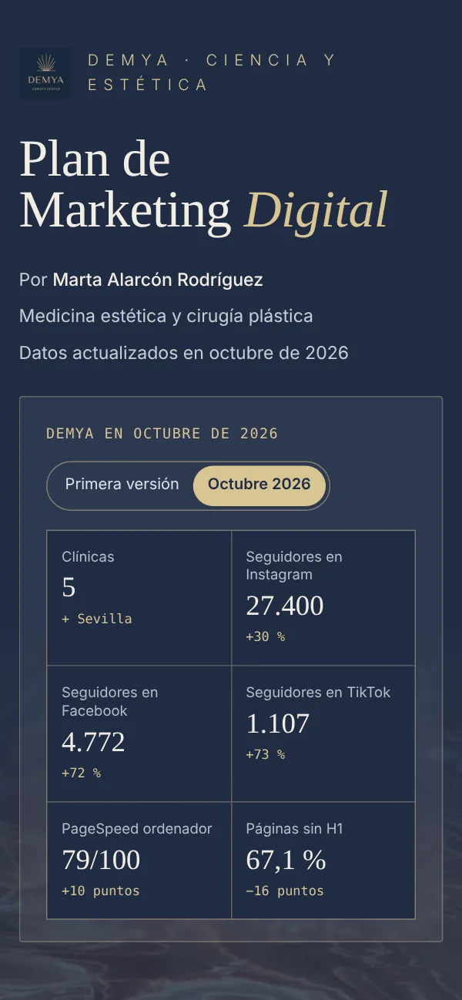

DEMYA Plan de Marketing Digital
Ein vollständiger Digitalmarketing-Plan für DEMYA, eine Gruppe von Kliniken für ästhetische Medizin und plastische Chirurgie: Website- und SEO-Audit, Social Media, Wettbewerb, SWOT, SMART-Ziele, Maßnahmenplan und KPIs. Mit Daten von Oktober 2026 aktualisiert und als interaktiver Web-Bericht umgesetzt, dazu eine PDF-Version.

- 01 Meine Rolle
- Analyse, Strategie und Aufbereitung des Plans – vom Audit bis zu den KPIs.
- 02 Die Herausforderung
- Viele Informationen (Website, SEO, Social Media und Wettbewerb) in einen Plan übersetzen, den eine Klinik versteht und umsetzen kann.
- 03 Was ich gemacht habe
- Audit mit Screaming Frog, PageSpeed Insights und Ahrefs, SWOT-Analyse, SMART-Ziele, Maßnahmenplan und KPIs – aktualisiert mit Daten von Oktober 2026.
- 04 Das Ergebnis
- Ein interaktiver Web-Bericht mit 16 Kapiteln und druckfertiger PDF-Version, in dem jeder Befund mit Screenshot und Empfehlung gezeigt wird.
Highlights
- 16 Kapitel, von der Situationsanalyse bis zu den KPIs, mit festem Inhaltsverzeichnis
- Audit SEO und Performance mit Screaming Frog, PageSpeed Insights und Ahrefs
- Belege kommentierte Screenshots mit nummerierten Rahmen und vergrößerten Details
- Web + PDF eine Quelle: responsiv am Bildschirm und druckfertig in A4
Umgesetzt mit HTML5 · CSS3 · JavaScript · Screaming Frog · PageSpeed Insights · Ahrefs